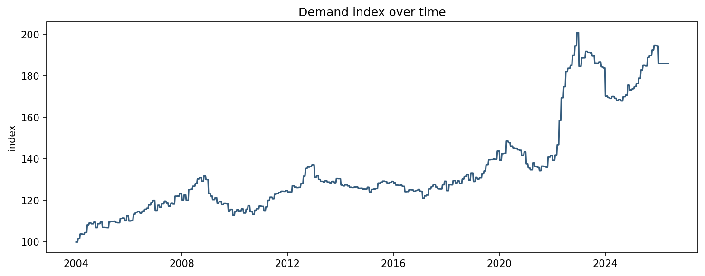
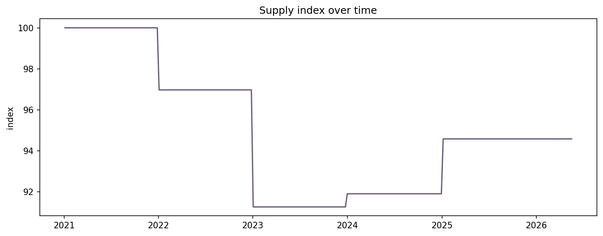
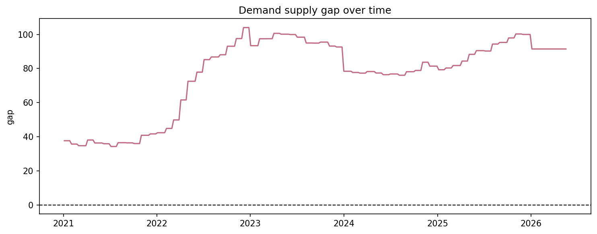
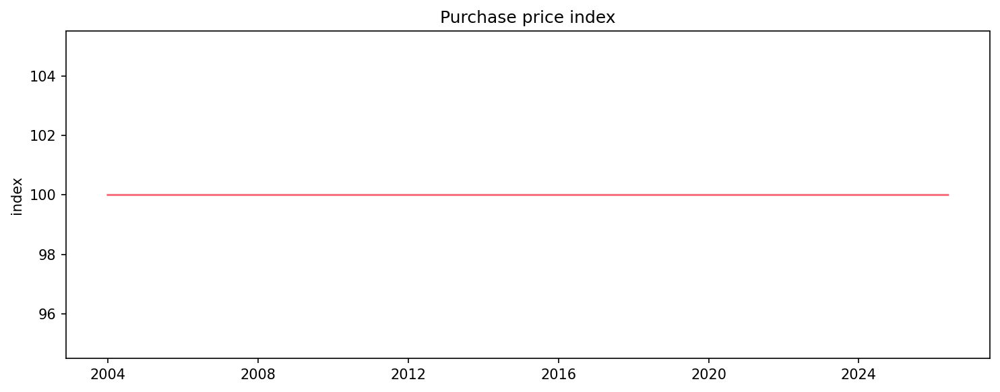
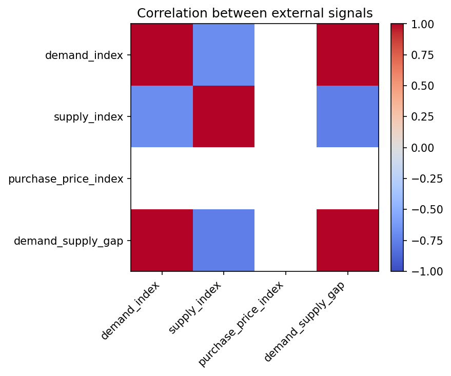
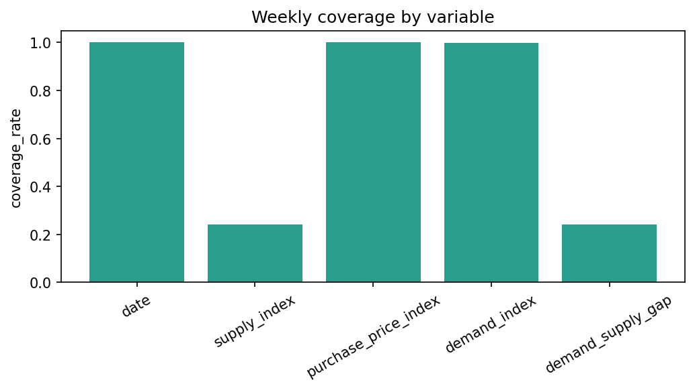

# CU28 mixed_context - External Context EDA
Notebook narrativo de auditoria para el scope `mixed_context`.
## Objetivo
Analizar las series procesadas de contexto externo para entender que variables proxy alimentan el pipeline oficial y cuales son sus limitaciones.
## Alcance
Este analisis describe la ruta oficial reproducible `mixed_context`. Las senales externas se tratan como contexto/proxy. Las variables internas de planta siguen siendo sinteticas salvo carga posterior de cliente.
## Inputs
- `data/processed/external/context/external_long.csv`
- `data/processed/external/context/context_weekly_for_simulation.csv`
- `data/processed/external/context/context_proxy_limitations.json`
## Outputs esperados
- `reports/tables/eda/external_context_summary__mixed_context.csv`
- `reports/tables/eda/external_context_weekly_snapshot__mixed_context.csv`
- `reports/tables/eda/external_context_limitations__mixed_context.csv`
- `reports/figures/eda/external_context_demand_index__mixed_context.png`
- `reports/figures/eda/external_context_supply_index__mixed_context.png`
- `reports/figures/eda/external_context_gap__mixed_context.png`
- `reports/figures/eda/external_context_price_index__mixed_context.png`
- `reports/figures/eda/external_context_correlation__mixed_context.png`
- `reports/figures/eda/external_context_coverage__mixed_context.png`
## Limitaciones
Este notebook documenta evidencia reproducible del pipeline oficial, pero no sustituye la revision de codigo, la auditoria de datos de origen ni una certificacion operacional de planta.
Code
from pathlib import Path
import json
import numpy as np
import pandas as pd
import matplotlib
matplotlib.use("Agg")
import matplotlib.pyplot as plt
from src.reproducibility.notebook_support import (
detect_temporal_columns,
ensure_eda_dirs,
execution_metadata,
first_valid_temporal_range,
load_source_manifests,
load_tabular_file,
parse_markdown_table,
print_frame,
print_series,
project_root,
read_json,
relative_to_root,
save_figure,
save_table,
sha256_file,
)
Output
Code
NOTEBOOK_NAME = "02_external_context_eda.ipynb"
PROJECT_ROOT = project_root()
SCOPE = globals().get("scope", "mixed_context")
REPORT_DIRS = ensure_eda_dirs()
META = execution_metadata(SCOPE)
FIGURES = []
TABLES = []
print(json.dumps(META, indent=2))
Output
{
"scope": "mixed_context",
"executed_at_utc": "2026-06-17T10:30:05.447397+00:00",
"commit": "b2fc273adf68c17087b4637655067bc80d417fa9"
}
## Carga de datos
Las siguientes celdas cargan los artefactos de entrada y muestran verificaciones intermedias antes de producir tablas y graficas.
Code
external_long_path = PROJECT_ROOT / "data/processed/external/context/external_long.csv"
context_weekly_path = PROJECT_ROOT / "data/processed/external/context/context_weekly_for_simulation.csv"
limitations_path = PROJECT_ROOT / "data/processed/external/context/context_proxy_limitations.json"
external_long = pd.read_csv(external_long_path)
external_long["date"] = pd.to_datetime(external_long["date"], errors="coerce")
print(external_long.shape)
print(external_long.columns.tolist())
print_frame("external_long preview", external_long.head(10))
Output
(4199, 7)
['date', 'source', 'dataset', 'subseries', 'value', 'unit', 'notes']
external_long preview
date source dataset subseries value unit notes
2003-12-29 MAPA PRICES_OM fallback_constant 100.000 index fallback_no_prices_extracted
2004-01-01 INE CPI 01.1.2.3 60.738 index table_id=76128
2004-01-01 INE CPI 01.1.2.3 -0.200 index table_id=76128
2004-01-01 INE CPI 01.1.2.3 0.400 index table_id=76128
2004-01-01 INE CPI 01.1.2.3 -0.200 index table_id=76128
2004-01-01 INE CPI 01.1.2.5 57.170 index table_id=76128
2004-01-01 INE CPI 01.1.2.5 -0.700 index table_id=76128
2004-01-01 INE CPI 01.1.2.5 0.000 index table_id=76128
2004-01-01 INE CPI 01.1.2.5 -0.700 index table_id=76128
2004-01-05 MAPA PRICES_OM fallback_constant 100.000 index fallback_no_prices_extracted
Code
context_weekly = pd.read_csv(context_weekly_path)
context_weekly["date"] = pd.to_datetime(context_weekly["date"], errors="coerce")
context_weekly["demand_supply_gap"] = context_weekly["demand_index"] - context_weekly["supply_index"]
limitations_payload = read_json(limitations_path)
limitations_df = pd.DataFrame({"limitation": limitations_payload.get("limitations", [])})
print(context_weekly.shape)
print(context_weekly.columns.tolist())
print_frame("context_weekly preview", context_weekly.head(10))
Output
(1169, 5)
['date', 'supply_index', 'purchase_price_index', 'demand_index', 'demand_supply_gap']
context_weekly preview
date supply_index purchase_price_index demand_index demand_supply_gap
2003-12-29 NaN 100.0 NaN NaN
2004-01-05 NaN 100.0 100.000000 NaN
2004-01-12 NaN 100.0 100.000000 NaN
2004-01-19 NaN 100.0 100.000000 NaN
2004-01-26 NaN 100.0 100.000000 NaN
2004-02-02 NaN 100.0 101.614481 NaN
2004-02-09 NaN 100.0 101.614481 NaN
2004-02-16 NaN 100.0 101.614481 NaN
2004-02-23 NaN 100.0 101.614481 NaN
2004-03-01 NaN 100.0 103.829780 NaN
## Inspeccion inicial
Primero se comprueba la estructura de ambos datasets procesados y el rango temporal disponible para la simulacion semanal.
Code
external_summary_shape = pd.DataFrame(
[{"dataset": "external_long", "rows": len(external_long), "columns": len(external_long.columns)}]
)
print_frame("Shape of external_long", external_summary_shape)
display(external_summary_shape)
Output
Shape of external_long
dataset rows columns
external_long 4199 7
| dataset |
rows |
columns |
| external_long |
4199 |
7 |
Code
weekly_summary_shape = pd.DataFrame(
[{"dataset": "context_weekly", "rows": len(context_weekly), "columns": len(context_weekly.columns)}]
)
print_frame("Shape of context_weekly", weekly_summary_shape)
display(weekly_summary_shape)
Output
Shape of context_weekly
dataset rows columns
context_weekly 1169 5
| dataset |
rows |
columns |
| context_weekly |
1169 |
5 |
Code
temporal_range = pd.DataFrame(
[
{
"dataset": "external_long",
"date_min": str(external_long["date"].min().date()),
"date_max": str(external_long["date"].max().date()),
},
{
"dataset": "context_weekly",
"date_min": str(context_weekly["date"].min().date()),
"date_max": str(context_weekly["date"].max().date()),
},
]
)
variable_table = pd.DataFrame({"variable": context_weekly.columns})
print_frame("Temporal range", temporal_range)
print_frame("Variables in context_weekly", variable_table, rows=20)
Output
Temporal range
dataset date_min date_max
external_long 2003-12-29 2026-05-18
context_weekly 2003-12-29 2026-05-18
Variables in context_weekly
variable
date
supply_index
purchase_price_index
demand_index
demand_supply_gap
Code
missing_summary = context_weekly.isna().mean().reset_index()
missing_summary.columns = ["variable", "missing_pct"]
missing_summary["missing_pct"] = missing_summary["missing_pct"].round(4)
print_frame("Missing values in context_weekly", missing_summary, rows=20)
display(missing_summary)
Output
Missing values in context_weekly
variable missing_pct
date 0.0000
supply_index 0.7596
purchase_price_index 0.0000
demand_index 0.0009
demand_supply_gap 0.7596
| variable |
missing_pct |
| date |
0.0000 |
| supply_index |
0.7596 |
| purchase_price_index |
0.0000 |
| demand_index |
0.0009 |
| demand_supply_gap |
0.7596 |
## Tablas intermedias
Se resume `external_long` por fuente, dataset y subserie para ver observaciones, cobertura y huecos antes de analizar las series agregadas semanales.
Code
external_context_summary = (
external_long.groupby(["source", "dataset", "subseries"], dropna=False)
.agg(
variable=("unit", "first"),
min_date=("date", "min"),
max_date=("date", "max"),
observations=("value", "size"),
missing_rate=("value", lambda s: float(pd.to_numeric(s, errors="coerce").isna().mean())),
)
.reset_index()
)
print_frame("Summary by source, dataset and subseries", external_context_summary, rows=20)
display(external_context_summary.head(20))
Output
Summary by source, dataset and subseries
source dataset subseries variable min_date max_date observations missing_rate
INE CPI 01.1.2.3 index 2004-01-01 2026-01-01 1060 0.0
INE CPI 01.1.2.5 index 2004-01-01 2026-01-01 1060 0.0
MAPA PRICES_OM fallback_constant index 2003-12-29 2026-05-18 1169 0.0
MAPA SLAUGHTER_MAPA TOTAL|value NaN 2021-01-01 2025-01-01 910 0.0
| source |
dataset |
subseries |
variable |
min_date |
max_date |
observations |
missing_rate |
| INE |
CPI |
01.1.2.3 |
index |
2004-01-01 |
2026-01-01 |
1060 |
0.0 |
| INE |
CPI |
01.1.2.5 |
index |
2004-01-01 |
2026-01-01 |
1060 |
0.0 |
| MAPA |
PRICES_OM |
fallback_constant |
index |
2003-12-29 |
2026-05-18 |
1169 |
0.0 |
| MAPA |
SLAUGHTER_MAPA |
TOTAL|value |
NaN |
2021-01-01 |
2025-01-01 |
910 |
0.0 |
Code
weekly_snapshot = context_weekly[["date", "demand_index", "supply_index", "demand_supply_gap", "purchase_price_index"]].head(12).copy()
print_frame("Weekly snapshot", weekly_snapshot, rows=12)
display(weekly_snapshot)
Output
Weekly snapshot
date demand_index supply_index demand_supply_gap purchase_price_index
2003-12-29 NaN NaN NaN 100.0
2004-01-05 100.000000 NaN NaN 100.0
2004-01-12 100.000000 NaN NaN 100.0
2004-01-19 100.000000 NaN NaN 100.0
2004-01-26 100.000000 NaN NaN 100.0
2004-02-02 101.614481 NaN NaN 100.0
2004-02-09 101.614481 NaN NaN 100.0
2004-02-16 101.614481 NaN NaN 100.0
2004-02-23 101.614481 NaN NaN 100.0
2004-03-01 103.829780 NaN NaN 100.0
2004-03-08 103.829780 NaN NaN 100.0
2004-03-15 103.829780 NaN NaN 100.0
| date |
demand_index |
supply_index |
demand_supply_gap |
purchase_price_index |
| 2003-12-29 |
NaN |
NaN |
NaN |
100.0 |
| 2004-01-05 |
100.000000 |
NaN |
NaN |
100.0 |
| 2004-01-12 |
100.000000 |
NaN |
NaN |
100.0 |
| 2004-01-19 |
100.000000 |
NaN |
NaN |
100.0 |
| 2004-01-26 |
100.000000 |
NaN |
NaN |
100.0 |
| 2004-02-02 |
101.614481 |
NaN |
NaN |
100.0 |
| 2004-02-09 |
101.614481 |
NaN |
NaN |
100.0 |
| 2004-02-16 |
101.614481 |
NaN |
NaN |
100.0 |
| 2004-02-23 |
101.614481 |
NaN |
NaN |
100.0 |
| 2004-03-01 |
103.829780 |
NaN |
NaN |
100.0 |
| 2004-03-08 |
103.829780 |
NaN |
NaN |
100.0 |
| 2004-03-15 |
103.829780 |
NaN |
NaN |
100.0 |
Code
fig, ax = plt.subplots(figsize=(10, 4))
ax.plot(context_weekly["date"], context_weekly["demand_index"], color="#355c7d")
ax.set_title("Demand index over time")
ax.set_ylabel("index")
FIGURES.append(save_figure(fig, "external_context_demand_index__mixed_context.png"))
plt.close(fig)
Output
Figure saved to: C:\Users\Erick Mercado\Documents\a28-cnp-carnico-neuroevolutivas-materia\reports\figures\eda\external_context_demand_index__mixed_context.png

### Interpretacion de la figura
`demand_index` captura presion de demanda sectorial agregada. Es una senal proxy de contexto y no una observacion directa de pedidos internos de planta.
Code
fig, ax = plt.subplots(figsize=(10, 4))
ax.plot(context_weekly["date"], context_weekly["supply_index"], color="#6c5b7b")
ax.set_title("Supply index over time")
ax.set_ylabel("index")
FIGURES.append(save_figure(fig, "external_context_supply_index__mixed_context.png"))
plt.close(fig)
Output
Figure saved to: C:\Users\Erick Mercado\Documents\a28-cnp-carnico-neuroevolutivas-materia\reports\figures\eda\external_context_supply_index__mixed_context.png

### Interpretacion de la figura
`supply_index` resume un proxy de oferta sectorial. Su lectura debe hacerse como contexto macro, no como disponibilidad confirmada para una planta concreta.
Code
fig, ax = plt.subplots(figsize=(10, 4))
ax.plot(context_weekly["date"], context_weekly["demand_supply_gap"], color="#c06c84")
ax.axhline(0.0, linestyle="--", color="black", linewidth=1)
ax.set_title("Demand supply gap over time")
ax.set_ylabel("gap")
FIGURES.append(save_figure(fig, "external_context_gap__mixed_context.png"))
plt.close(fig)
Output
Figure saved to: C:\Users\Erick Mercado\Documents\a28-cnp-carnico-neuroevolutivas-materia\reports\figures\eda\external_context_gap__mixed_context.png

### Interpretacion de la figura
La brecha `demand_supply_gap` representa tension relativa entre demanda y oferta. Se usa como contexto de riesgo, no como decision de compra final.
Code
purchase_price_constant = context_weekly["purchase_price_index"].nunique() == 1
fig, ax = plt.subplots(figsize=(10, 4))
ax.plot(context_weekly["date"], context_weekly["purchase_price_index"], color="#f67280")
ax.set_title("Purchase price index")
ax.set_ylabel("index")
FIGURES.append(save_figure(fig, "external_context_price_index__mixed_context.png"))
plt.close(fig)
print(f"purchase_price_index uses fallback constant: {purchase_price_constant}")
Output
Figure saved to: C:\Users\Erick Mercado\Documents\a28-cnp-carnico-neuroevolutivas-materia\reports\figures\eda\external_context_price_index__mixed_context.png
purchase_price_index uses fallback constant: True

Code
corr = context_weekly[["demand_index", "supply_index", "purchase_price_index", "demand_supply_gap"]].corr(numeric_only=True)
fig, ax = plt.subplots(figsize=(6, 5))
image = ax.imshow(corr.values, cmap="coolwarm", vmin=-1, vmax=1)
ax.set_xticks(range(len(corr.columns)))
ax.set_yticks(range(len(corr.index)))
ax.set_xticklabels(corr.columns, rotation=45, ha="right")
ax.set_yticklabels(corr.index)
ax.set_title("Correlation between external signals")
fig.colorbar(image, ax=ax, fraction=0.046, pad=0.04)
FIGURES.append(save_figure(fig, "external_context_correlation__mixed_context.png"))
plt.close(fig)
print(corr.to_string())
Output
Figure saved to: C:\Users\Erick Mercado\Documents\a28-cnp-carnico-neuroevolutivas-materia\reports\figures\eda\external_context_correlation__mixed_context.png
demand_index supply_index purchase_price_index demand_supply_gap
demand_index 1.000000 -0.694110 NaN 0.994946
supply_index -0.694110 1.000000 NaN -0.762883
purchase_price_index NaN NaN NaN NaN
demand_supply_gap 0.994946 -0.762883 NaN 1.000000

Code
coverage_df = context_weekly.notna().mean().reset_index()
coverage_df.columns = ["variable", "coverage_rate"]
fig, ax = plt.subplots(figsize=(7, 4))
ax.bar(coverage_df["variable"], coverage_df["coverage_rate"], color="#2a9d8f")
ax.set_title("Weekly coverage by variable")
ax.set_ylabel("coverage_rate")
ax.tick_params(axis="x", rotation=30)
FIGURES.append(save_figure(fig, "external_context_coverage__mixed_context.png"))
plt.close(fig)
print_frame("Coverage table", coverage_df)
Output
Figure saved to: C:\Users\Erick Mercado\Documents\a28-cnp-carnico-neuroevolutivas-materia\reports\figures\eda\external_context_coverage__mixed_context.png
Coverage table
variable coverage_rate
date 1.000000
supply_index 0.240376
purchase_price_index 1.000000
demand_index 0.999145
demand_supply_gap 0.240376

## Limitaciones proxy
La siguiente tabla se deriva del JSON de limitaciones y debe leerse junto con la evidencia de que `purchase_price_index` puede operar como valor constante de respaldo.
Code
print_frame("Proxy limitations", limitations_df, rows=20)
display(limitations_df)
Output
Proxy limitations
limitation
{'issue': 'purchase_price_index_is_placeholder_constant', 'status': 'traced_not_active', 'affected_artifact': 'data/processed/external/context/context_weekly_for_simulation.csv', 'evidence': {'unique_values': 1, 'prices_om_subseries': ['fallback_constant']}, 'technical_comment': 'MAPA_PRICES_OM remains traced only. The defended route does not claim an active weekly price feed unless a reproducible weekly series is available.'}
{'issue': 'external_sources_are_contextual_proxies', 'status': 'documented_scope_boundary', 'affected_artifact': 'data/processed/external/context/context_weekly_for_simulation.csv', 'technical_comment': 'External context variables are real/proxy signals and do not represent internal plant inventory, orders or receipts.'}
{'issue': 'supply_index_absent_before_mapa_slaughter_coverage', 'status': 'no_backward_fill_applied', 'affected_artifact': 'data/processed/external/context/context_weekly_for_simulation.csv', 'evidence': {'first_valid_supply_week': '2021-01-04', 'pre_2021_missing_rows': 888}, 'technical_comment': 'MAPA_SLAUGHTER_MAPA starts in 2021 in the local snapshot. supply_index remains NaN before the first observed value; modeling and inference fill NaNs later with train-fitted statistics and an explicit neutral fallback for all-missing train columns.'}
| limitation |
| {'issue': 'purchase_price_index_is_placeholder_constant', 'status': 'traced_not_active', 'affected_artifact': 'data/processed/external/context/context_weekly_for_simulation.csv', 'evidence': {'unique_values': 1, 'prices_om_subseries': ['fallback_constant']}, 'technical_comment': 'MAPA_PRICES_OM remains traced only. The defended route does not claim an active weekly price feed unless a reproducible weekly series is available.'} |
| {'issue': 'external_sources_are_contextual_proxies', 'status': 'documented_scope_boundary', 'affected_artifact': 'data/processed/external/context/context_weekly_for_simulation.csv', 'technical_comment': 'External context variables are real/proxy signals and do not represent internal plant inventory, orders or receipts.'} |
| {'issue': 'supply_index_absent_before_mapa_slaughter_coverage', 'status': 'no_backward_fill_applied', 'affected_artifact': 'data/processed/external/context/context_weekly_for_simulation.csv', 'evidence': {'first_valid_supply_week': '2021-01-04', 'pre_2021_missing_rows': 888}, 'technical_comment': 'MAPA_SLAUGHTER_MAPA starts in 2021 in the local snapshot. supply_index remains NaN before the first observed value; modeling and inference fill NaNs later with train-fitted statistics and an explicit neutral fallback for all-missing train columns.'} |
Code
TABLES.append(save_table(external_context_summary, "external_context_summary__mixed_context.csv"))
TABLES.append(save_table(weekly_snapshot, "external_context_weekly_snapshot__mixed_context.csv"))
TABLES.append(save_table(limitations_df, "external_context_limitations__mixed_context.csv"))
RESULT = {
"notebook": NOTEBOOK_NAME,
"tables": TABLES,
"figures": FIGURES,
"findings": [
"External processed signals remain contextual proxies and do not replace internal plant telemetry.",
"The weekly dataset is compact and reproducible, with demand, supply and gap signals aligned on a common calendar.",
"purchase_price_index must be interpreted as fallback evidence when it remains constant.",
],
"limitations": [
"Proxy limitations are structural and already documented in the dedicated JSON contract.",
],
}
print(json.dumps(RESULT, indent=2))
Output
Table saved to: C:\Users\Erick Mercado\Documents\a28-cnp-carnico-neuroevolutivas-materia\reports\tables\eda\external_context_summary__mixed_context.csv
Table saved to: C:\Users\Erick Mercado\Documents\a28-cnp-carnico-neuroevolutivas-materia\reports\tables\eda\external_context_weekly_snapshot__mixed_context.csv
Table saved to: C:\Users\Erick Mercado\Documents\a28-cnp-carnico-neuroevolutivas-materia\reports\tables\eda\external_context_limitations__mixed_context.csv
{
"notebook": "02_external_context_eda.ipynb",
"tables": [
"reports/tables/eda/external_context_summary__mixed_context.csv",
"reports/tables/eda/external_context_weekly_snapshot__mixed_context.csv",
"reports/tables/eda/external_context_limitations__mixed_context.csv"
],
"figures": [
"reports/figures/eda/external_context_demand_index__mixed_context.png",
"reports/figures/eda/external_context_supply_index__mixed_context.png",
"reports/figures/eda/external_context_gap__mixed_context.png",
"reports/figures/eda/external_context_price_index__mixed_context.png",
"reports/figures/eda/external_context_correlation__mixed_context.png",
"reports/figures/eda/external_context_coverage__mixed_context.png"
],
"findings": [
"External processed signals remain contextual proxies and do not replace internal plant telemetry.",
"The weekly dataset is compact and reproducible, with demand, supply and gap signals aligned on a common calendar.",
"purchase_price_index must be interpreted as fallback evidence when it remains constant."
],
"limitations": [
"Proxy limitations are structural and already documented in the dedicated JSON contract."
]
}
| source |
dataset |
subseries |
variable |
min_date |
max_date |
observations |
missing_rate |
| INE |
CPI |
01.1.2.3 |
index |
2004-01-01 |
2026-01-01 |
1060 |
0.0 |
| INE |
CPI |
01.1.2.5 |
index |
2004-01-01 |
2026-01-01 |
1060 |
0.0 |
| MAPA |
PRICES_OM |
fallback_constant |
index |
2003-12-29 |
2026-05-18 |
1169 |
0.0 |
| MAPA |
SLAUGHTER_MAPA |
TOTAL|value |
NaN |
2021-01-01 |
2025-01-01 |
910 |
0.0 |
| date |
demand_index |
supply_index |
demand_supply_gap |
purchase_price_index |
| 2003-12-29 |
NaN |
NaN |
NaN |
100.0 |
| 2004-01-05 |
100.000000 |
NaN |
NaN |
100.0 |
| 2004-01-12 |
100.000000 |
NaN |
NaN |
100.0 |
| 2004-01-19 |
100.000000 |
NaN |
NaN |
100.0 |
| 2004-01-26 |
100.000000 |
NaN |
NaN |
100.0 |
| 2004-02-02 |
101.614481 |
NaN |
NaN |
100.0 |
| 2004-02-09 |
101.614481 |
NaN |
NaN |
100.0 |
| 2004-02-16 |
101.614481 |
NaN |
NaN |
100.0 |
| 2004-02-23 |
101.614481 |
NaN |
NaN |
100.0 |
| 2004-03-01 |
103.829780 |
NaN |
NaN |
100.0 |
| 2004-03-08 |
103.829780 |
NaN |
NaN |
100.0 |
| 2004-03-15 |
103.829780 |
NaN |
NaN |
100.0 |
| limitation |
| {'issue': 'purchase_price_index_is_placeholder_constant', 'status': 'traced_not_active', 'affected_artifact': 'data/processed/external/context/context_weekly_for_simulation.csv', 'evidence': {'unique_values': 1, 'prices_om_subseries': ['fallback_constant']}, 'technical_comment': 'MAPA_PRICES_OM remains traced only. The defended route does not claim an active weekly price feed unless a reproducible weekly series is available.'} |
| {'issue': 'external_sources_are_contextual_proxies', 'status': 'documented_scope_boundary', 'affected_artifact': 'data/processed/external/context/context_weekly_for_simulation.csv', 'technical_comment': 'External context variables are real/proxy signals and do not represent internal plant inventory, orders or receipts.'} |
| {'issue': 'supply_index_absent_before_mapa_slaughter_coverage', 'status': 'no_backward_fill_applied', 'affected_artifact': 'data/processed/external/context/context_weekly_for_simulation.csv', 'evidence': {'first_valid_supply_week': '2021-01-04', 'pre_2021_missing_rows': 888}, 'technical_comment': 'MAPA_SLAUGHTER_MAPA starts in 2021 in the local snapshot. supply_index remains NaN before the first observed value; modeling and inference fill NaNs later with train-fitted statistics and an explicit neutral fallback for all-missing train columns.'} |
## Concluson final
`external_long` documenta procedencia y cobertura de las series fuente, mientras que `context_weekly_for_simulation.csv` concentra el contexto semanal que alimenta la reconstruccion `mixed_context`.